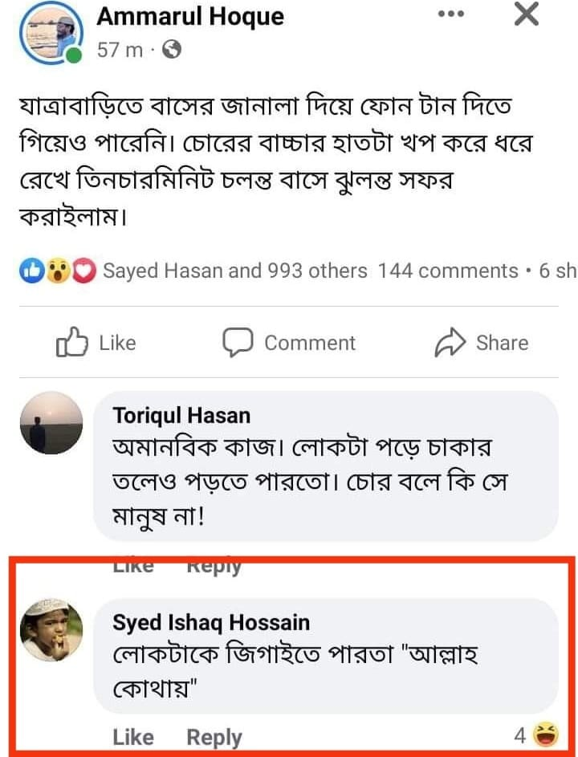

ইমাম শাফিই রাহ. সত্যিই বলেছেন
১৩ জুন, ২০২৩
ইমাম শাফিই রাহ. সত্যিই বলেছেন—
ما أفلح سمين قط, الا أن يكون محمد بن الحسن.
‘ইমাম মোহাম্মদ রাহ. ছাড়া কোনো মেদবহুল-মোটা মানুষ কখনো সফল হয় নাই।’
জিজ্ঞেস করা হল— কেন? জবাব দিলেন— ‘বিবেকবান মানুষের মাঝে দুই বৈশিষ্ঠের একটি অবশ্যই থাকে— হয় আখেরাতের পেরেশানি অথবা দুনিয়াবি জীবনের পেরেশানি। আর পেরেশান ব্যক্তির শরীরে মেদ বাঁধে না। কিন্তু যখন দুই উদ্দেশ্যের কোনোটিই জীবনে থাকে না, তখন মানুষ পশুর কাতারে চলে যায়। ফলে শরীরে মেদ/চর্বি বাঁধে।’
[হিলয়াতুল আওলিয়া- ৯/১৪৬]
